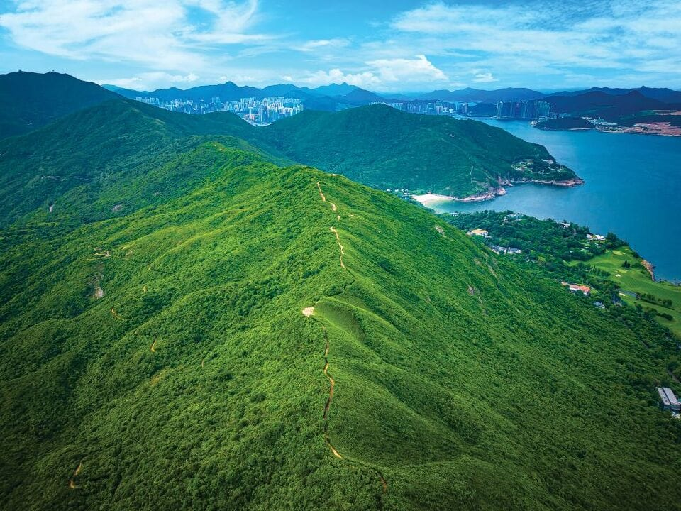
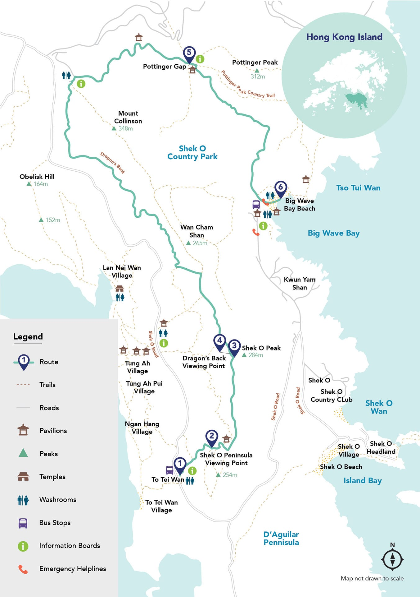
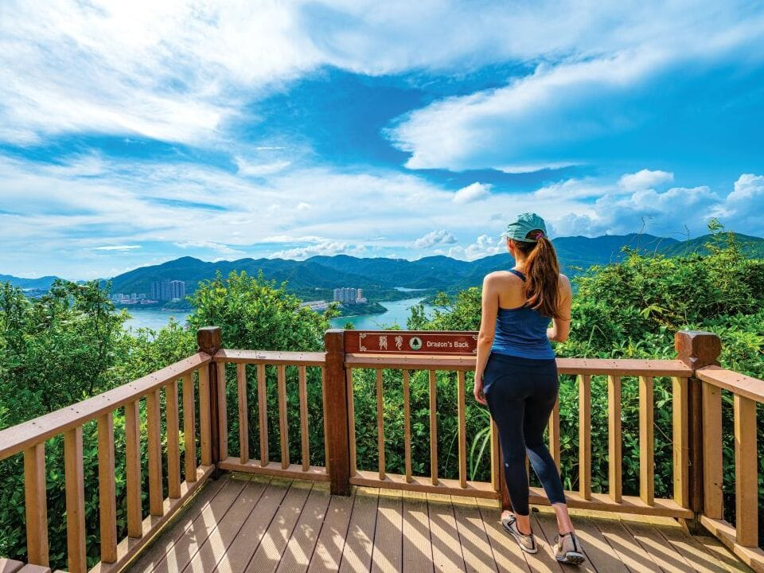
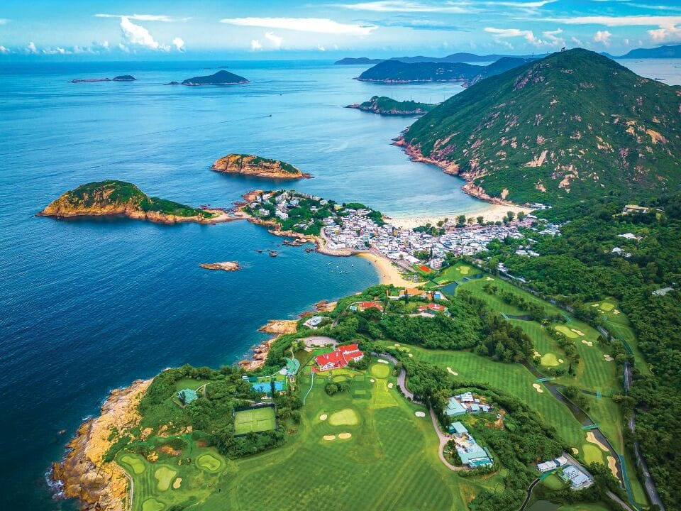
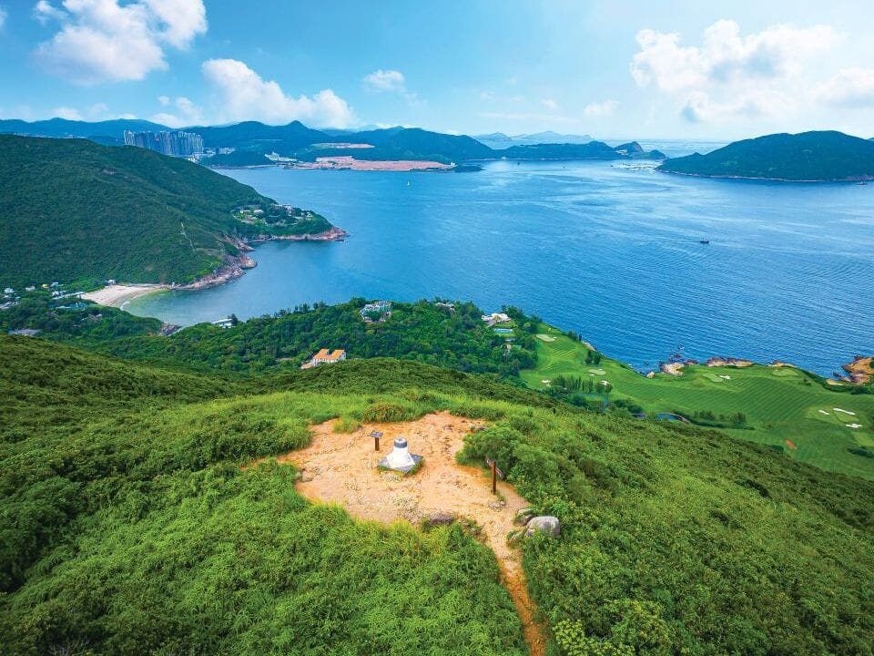
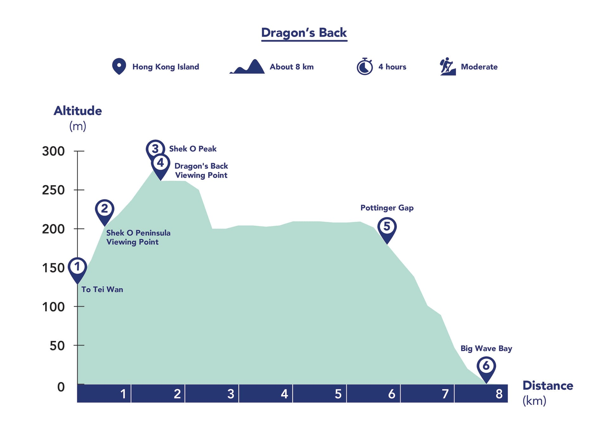

Dragon's Back hike + Shek O in the morning (Stop 4), Tai Kwun + Central in the afternoon, Star Ferry at blue hour, A Symphony of Lights and Temple Street + Mong Kok in the evening (Stop 5).
The read-along version of the morning: what happens in what order, and what you're actually looking at while it happens. Times are realistic, not best-case — the padding lives in Shek O at lunch, so nothing here needs rushing. The trail is Stage 8, the final stage, of the 50 km Hong Kong Trail, waymarked with dragon symbols. Our finish is Shek O village, via the branch path off the ridge; the tourism board's through-route (the map below) carries on north to Pottinger Gap and Big Wave Bay.


The official route map: our walk is stops 1 → 4, then the signposted Shek O branch down to Shek O Road instead of the Pottinger Gap / Big Wave Bay finish. Map and photos: Hong Kong Tourism Board.
Garden Cafe at the Conrad, and eat properly — there is nothing to buy on the ridge: no water, no shops, no shade for long stretches. Fill up here, sunscreen before you leave (UV is forecast at 9, very high), and carry 1.5 litres of water each. That number is not a suggestion.
Five minutes at the Admiralty station customer service centre directly under the hotel: two On-Loan Octopus cards, HK$150 each (HK$50 deposit + HK$100 loaded), one per person. Then the eastbound Island Line toward Chai Wan. The city portion of the morning is deliberately boring — save your attention for the ridge.
Out at Shau Kei Wan and follow the signs for the bus terminus (the tourism board's directions use Exit A2). You're looking for the bus 9 bay, destination Shek O. This is a workaday Hong Kong transport interchange — cha chaan tengs and bakeries around the terminus if a bun for the trail appeals.
Sit on the right side. The road climbs out of the city in switchbacks and Tai Tam Bay opens up below you — the first scenery of the day, through glass. About 15 minutes. Your stop is To Tei Wan: watch for the trail map board at the roadside, and the bus announcement.
The trail starts right beside the bus stop. Use the restrooms here — they're the last proper ones until Shek O. Look right before you start: Tai Tam Bay, and tucked almost out of sight below the treeline, the smaller bay of To Tei Wan, which gives its name to the little beach and village below. Then find the first dragon marker and start up.
The honest work of the hike, front-loaded: roughly 500 metres of stone steps climbing a forested hillside. Shaded and green at first; then the trees thin, the sea starts appearing through them, and the steps deliver you to a wooden platform.

First full payoff. The platform overlooks the Shek O Peninsula and its two offshore isles, with the coastline running away in both directions. Breather, water, photos — the summit is still above you, but the climb eases from here into shorter rises.

An hour or less after leaving the road you're on the top of the walk. Shek O Peak is the day's grandstand: a genuine 360°. Big Wave Bay's crescent below one side; Stanley and Tai Tam Bay around the other; Lamma Island offshore on a clear day. And look along the ridge itself — from up here you can see the trail cutting across the green spine and curling back on itself beside Big Wave Bay. That's the dragon. The name stops being a metaphor at this exact spot.

The signature hour, and the reason this trail wins awards: an undulating ridge path with the sea on both sides — Shek O and Big Wave Bay to the east, Tai Tam and Stanley to the west — rolling over a series of grassy humps. Partway along, the Dragon's Back Viewing Point's big panoramic board names what you're seeing. Look up occasionally: paragliders work the lift off this ridge. And keep half an eye on the left-hand side of the trail — our exit is coming up.
This is the one navigational moment of the day. The through-route marches on north — over Wan Cham Shan, through Pottinger Gap (pavilion, shade, and the tower blocks of Chai Wan suddenly behind you) and down to Big Wave Bay, another hour or so in total. That's the road not taken. Our branch peels off the ridge to the left (west), signposted down toward Shek O Road. If you reach the Pottinger Gap pavilion, you've overshot — come back to the junction.

The elevation profile tells the day's story: one climb, a rolling ridge, then all downhill. Profile: Hong Kong Tourism Board.
The branch path trades ridge wind for scrub and birdsong, dropping west to Shek O Road. From the road it's the last gentle stretch south into Shek O village — walk it in about 20 minutes, or hop the bus 9 for two stops — passing the Shek O Country Club's golf greens (the other Hong Kong, manicured) before the village lanes and the beach appear.
A crescent of white sand with lifeguard towers, backed by a low, sleepy village — the city's beach-town idyll, 40 minutes from Central. Swim if you like, or don't; lunch in the village is the main event, and this is where the morning's buffer lives. The plan says leave around 1:15, but nothing breaks if lunch runs long — the afternoon flexes, the light at the Peak tomorrow doesn't apply here. When you're ready: the bus 9 terminus is in the village.
Bus 9 down Shek O Road to Shau Kei Wan, Island Line back to Admiralty, and up into the Conrad by ~2:15 PM — showers, a change of clothes, and the afternoon (Tai Kwun, PMQ, the escalators) starts from the slot above. Legs officially done for the day.
Deep dive added Oct 29 at Justin's request. Route facts, photos, map and elevation profile: Hong Kong Tourism Board, "Dragon's Back" guide (discoverhongkong.com). Segment times, the Octopus stop and the Shek O finish are our plan, adapted from the board's route.
The read-along version of the afternoon. The hike was Hong Kong the wild island; this is Hong Kong the layered city — a colonial prison turned art compound, a police dormitory turned design mall, and the 800-metre machine that stitches the hillside together. Everything is within a 15-minute walk of everything else; the escalators do the climbing.
Out of the Conrad, MTR Admiralty → Central (one stop), and up into the start of the Central–Mid-Levels escalator system at Queen's Road Central. Know what you're riding: 800 metres of linked escalators and travelators, climbing 135 vertical metres — the longest outdoor covered escalator system in the world, opened in 1993 to move Mid-Levels commuters without cars. It runs downhill from 6–10 AM for the morning commute and uphill from 10 AM to midnight — which is to say, all afternoon it exists purely for you. Ride it in segments, stepping off where the cross-streets cut through, and get off at Hollywood Road. Ten minutes of standing still while the city rises past you: banks, then boutiques, then old tenement blocks with laundry out.
Across Hollywood Road and in through Tai Kwun's gate. The name first: 大館 (Tai Kwun), "Big Station" — what everyone called the Central Police Station when this walled block was the law in Hong Kong. Behind these walls sat the whole machinery of colonial justice on one sloping site: the police headquarters at the bottom, the Central Magistracy (the court) in the middle, and Victoria Prison at the top — arrested, tried and jailed without leaving the compound. The last prisoners left in 2006; the Jockey Club restored it with architects Herzog & de Meuron and it reopened in 2018 as a heritage and arts centre. Entry is free. Sixteen heritage buildings, and the hill arranges them into a story: authority at the front, punishment at the back.
You enter onto the Parade Ground, the open square where police companies once drilled at dawn — now café tables and a lawn-calm you won't find anywhere else in Central. On your left, the Barrack Block (1864), the compound's oldest survivor: three storeys of deep shaded verandahs where single officers lived above the stables and stores. Facing the square, the Police Headquarters Block (1919) — granite and red brick, Doric columns, the colonial state presenting its respectable face. Walk the verandahs slowly: exhibits in the ground-floor rooms tell the compound's story decade by decade, and the contrast is the exhibit — this serene stone courtyard outside, and just over the wall, the bars of SoHo packing in for happy hour. Tai Kwun is an island of quiet the city flows around.
Follow the slope up through the Magistracy level to the Prison Yard — and the mood changes on cue: higher walls, smaller windows, no ornament. This was Hong Kong's first prison, and it held everyone from petty thieves to pirates to political prisoners across 165 years. In the prison halls (look for the cell blocks — B Hall and F Hall), walk the cell corridor: the cells are barely wider than the bunk, the doors are iron and timber, and the storytelling displays give you individual prisoners — a Vietnamese leader (Ho Chi Minh was held in Victoria Prison in the 1930s), wartime internees, the last inmates of 2006. Out in the yard, find the old mango tree — planted generations ago, beloved by inmates who watched its seasons mark their sentences; it still fruits. Then look at the two buildings that don't match anything: the JC Cube and JC Contemporary, wrapped in a perforated aluminium skin patterned on the compound's brickwork — the new architecture deliberately ghosting the old. From the upper yard, the view back down over the rooftops to the harbour closes the compound's argument: punishment had the best view in Central.
Out of Tai Kwun's upper side and a short walk along Aberdeen Street brings you to a completely different kind of block: two slab towers around a courtyard, painted in 1950s institutional cream and green. This is PMQ. The walk itself is the transition — antique shops and galleries along Hollywood Road's upper stretch, the Man Mo Temple's incense coils a block away if the smell pulls you in (five minutes, worth it, but don't let it eat the afternoon).
PMQ began in 1951 as the Police Married Quarters — the first housing built for married junior officers, two 7-storey blocks of small family flats with shared kitchens, a modernist experiment in how the force's families should live. Since 2014 it's been the city's design incubator: around a hundred small studios and shops across the two blocks (Staunton and Hollywood), and the standard is high — Hong Kong designers' leatherwork, ceramics, jewellery, stationery, indie fashion. This is where souvenir money should go: things actually designed and made here. Ride the lift or climb to an upper floor and look at the flat layouts preserved in places — the bones of the dormitory are still legible. Then go down, because the best exhibit is underground: beneath the courtyard, protected behind glass, lie the excavated stone foundations of the Central School — the school that stood on this site in the 1800s (it became Queen's College; a young Sun Yat-sen was a student). Three eras stacked on one plot: school, police dormitory, design hub. The courtyard between the blocks — the Qube — usually has an installation or a market; grab a coffee here if the legs ask.
Rejoin the escalator line at Staunton Street and ride up through SoHo — South of Hollywood Road — where the system becomes street theatre. The escalator threads through the neighbourhood at second-storey height: restaurant terraces at eye level, bars laying out their evening, kitchen smells crossing the walkway, everyone in the city either commuting up past you or settling into a first drink below. Hop off at any crossing that catches you — Elgin Street for the densest restaurant run — and rejoin a segment later. There's no wrong stop; that's the design. Ride as far as Caine Road if the mood holds, then it's time to turn for the harbour — which means doing the descent the old way.
The escalators only run up at this hour, so the way down is the city's oldest escalator of all: Pottinger Street — Stone Slab Street — a steep lane paved with uneven granite slabs, built in the 1850s so sedan chairs and porters could grip the hill. Pick your way down past the costume and fancy-dress shops (Halloween is tomorrow; the street is doing brisk trade) to Queen's Road Central. From there, rise onto the elevated walkway network — the covered footbridges that float you above the traffic past the General Post Office and the IFC podium, all the way to the piers. You'll arrive at Central Pier 7 with a quarter of an hour in hand: green-and-white signage, two decks, and a boat every few minutes. Upper deck. The evening's guide starts on the water.
Deep dive added Oct 30. Researched from operator and primary sources — Tai Kwun (taikwun.hk), PMQ (pmq.org.hk), Transport Department escalator references — with details flagged where they drift. Segment times are the plan's, at realistic pace.
The read-along version of the night. One crossing, one light show, one claypot dinner, one market, one long graze — the classic Kowloon evening, in the order the light demands. Nothing here needs booking; the only appointment is 8:00 PM, when the skyline performs.
Tap the Octopus at the Pier 7 turnstile and take the upper deck. The Star Ferry has been making this crossing since 1888, when a Parsi merchant named Dorabjee Naorojee started the Kowloon Ferry Company with boats named for the stars — Morning Star, Evening Star — and the company took the name in 1898. The ferries have barely changed since: green and white, double-ended so they never turn around, with slatted wooden benches whose backs flip for the return trip. Settle on the right-hand side and watch two skylines trade places — Central receding behind you (IFC, the Bank of China Tower's blades, the Convention Centre's wing roof), Tsim Sha Tsui growing ahead. The harbour works around you: container ships in the channel, harbour cruise boats, and with luck the red-sailed Aqua Luna junk crossing your bow. Seven to ten minutes, a few dollars — a crossing once put on National Geographic's "50 Places of a Lifetime" list, and still absurdly underpriced.
Off the ferry at Tsim Sha Tsui and you're standing in front of the Clock Tower — 44 metres of red brick and granite, finished in 1915, and all that survives of the old Kowloon railway station, demolished in 1978 over public protest. Its bell, silent for decades, rings again on the hour. Turn left (east) along the promenade into the Avenue of Stars: Hong Kong cinema's answer to Hollywood's Walk of Fame, rebuilt in 2019 with the handprints moved up onto the railing where you can lean on them — around a hundred plaques of the industry's greats. The two statues stop everyone: Bruce Lee, frozen mid-pose, water at his feet — and Anita Mui, the city's beloved diva, in full stage dress. But the statues are the pretext; the view across the water is the exhibit. Find a railing spot and watch the island do its evening trick: the sky going indigo, the towers answering floor by floor, the harbour ferries stitching light trails between. Photographers with tripods colonise this rail for a reason — this is the postcard, live.
The hour before 8 is not dead time; it's the second act of the light. Walk slowly — the Hong Kong Museum of Art (the gridded facade behind you, rebuilt and reopened in 2019) and the Cultural Centre's great sloped wall anchor the promenade's architecture — and let the skyline finish switching itself on. Coffee or an ice cream from a promenade kiosk. By 7:50, drift back toward the Clock Tower end of the Avenue of Stars and claim a railing place: that's where the show's music and narration play from the promenade speakers, and where the view takes in both shores at once. Sunset was at 5:47; by now the harbour is black glass and the city is fully lit. You are in the front row of the world's biggest light rig.
It starts with a fanfare and a voice, and then the skyline stops being scenery and becomes the instrument. A Symphony of Lights is certified by Guinness as the world's largest permanent light and sound show — forty-plus buildings on both sides of the harbour performing in sequence for ten minutes. Watch for the grammar of it: laser beams sweeping the sky from the tallest towers, whole facades rippling colour in waves that travel down the shore, searchlights crossing over the water, and the ICC across in West Kowloon answering the island tower for tower. Individual buildings take solos; the finale brings everything up at once. Then it ends — cleanly, no encore — and the crowd exhales and starts thinking about dinner. So should you.
Back through the TST station and the Tsuen Wan line carries you two stops — Jordan, then Yau Ma Tei — in about six minutes. Out via Exit C and the lane delivers you almost straight into Temple Street's glow. Smell first: charcoal, soy, hot clay. The market is just hitting its stride — it only really wakes up after dark — and dinner comes before browsing, while the famous kitchens still have room.
The claypot kitchens cluster toward the Yau Ma Tei end of the street, and the name on every local's list is Four Seasons Claypot Rice — expect a short queue, shared tables, and zero ceremony; all three are good signs. Order the classic: chicken with Chinese sausage (lap cheong), or salted fish with minced pork if you want the deeper funk. Here's the ritual: the pot arrives on a wire stand, still furiously bubbling under its lid. The server lifts the lid at the table, drizzles dark soy sauce around the hot rim so it sizzles and caramelises, and you stir it through the rice — and then you hunt for the prize at the bottom: the faan jiu, the golden, crunchy crust of rice that only a clay pot over real flame can make. A plate of choi sum in oyster sauce on the side and you've eaten the dish this street is famous for, the way it's meant to be eaten — hot, smoky, a little scorched at the edges.
Now walk the market. Temple Street runs from Jordan up to Yau Ma Tei, named for the Tin Hau Temple at its northern end, and after dark it's Hong Kong's great open-air bazaar: stall after stall of watches, jade, phone cases, luggage, art prints, Bruce Lee posters, things you need and things nobody needs. The soul of it sits in the square by the temple — Yung Shue Tau — under the banyan trees: rows of fortune tellers at little lamplit stalls, reading palms and faces, and the famous bird fortune tellers, whose parakeet hops from its cage, selects a fortune card with its beak, and delivers your fate for a modest fee. Cantonese opera singers sometimes perform at the square's edge with a two-piece band, singing to the regulars. Linger, watch, photograph the scene — wide shots over portraits, and ask before close-ups; fortunes are a business and faces are private. This square, lamplit under the banyans, is the photograph of the night.
One MTR stop (Yau Ma Tei → Mong Kok, two minutes) or a ten-minute walk up Nathan Road's neon canyon, and the city changes key. Mong Kok — 旺角， "busy corner" — has been measured among the most densely populated places on Earth, and on a Friday night it feels it: a river of people, signage stacked twenty storeys up, sound everywhere. Two streets do the honours. Tung Choi Street is the Ladies' Market: a kilometre of stalls — bags, clothes, souvenirs — where the etiquette is to offer half, smile, and walk away slowly. Fa Yuen Street is Sneaker Street: every trainer shop in Hong Kong compressed into one block of glowing storefronts. And graze as you go, because this is street-food central: curry fish balls (the orange skewers, properly spicy), siu mai on sticks, cheung fun rice rolls slicked with sesame and hoisin, egg waffles (gai daan jai) — crisp golden bubbles, best eaten tearing pieces off as you walk — and mango desserts to finish. Eat in the street, standing, like everyone else.
When the night says enough: Mong Kok station, Tsuen Wan line, straight to Admiralty — about twelve minutes, no change of train — and the lift up into the Conrad. Last trains run past midnight, so there's no cliff edge under the evening; if the graze runs long, a taxi from Nathan Road gets you home in about 25 minutes. Tomorrow is the slow day. Sleep like it.
Deep dive added Oct 30. Researched from operator and primary sources — Star Ferry (starferry.com.hk), the Avenue of Stars and A Symphony of Lights (Hong Kong Tourism Board), Temple Street references — with details flagged where they drift. Segment times are the plan's, at realistic pace.
Music credits (CC BY 4.0, as required by the licence): Music: All The Tea In China by Shane Ivers — https://www.silvermansound.com · Music: Imperial China Cinematic by Shane Ivers — https://www.silvermansound.com · “Guzheng City” by Kevin MacLeod (incompetech.com) · All three tracks licensed under Creative Commons Attribution 4.0. The narration voice is DAJD's guide voice, mixed over the music at low volume — the music is part of each narration track, not a separate stream.